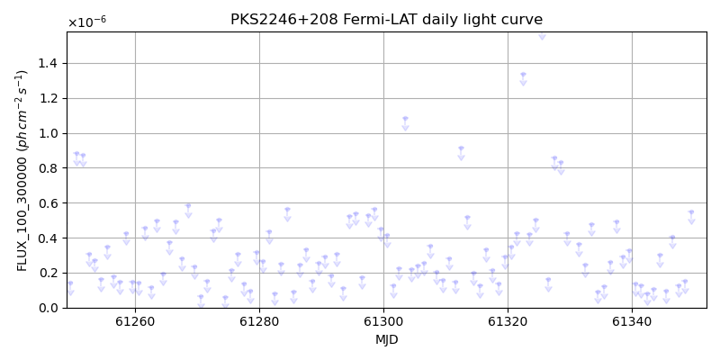
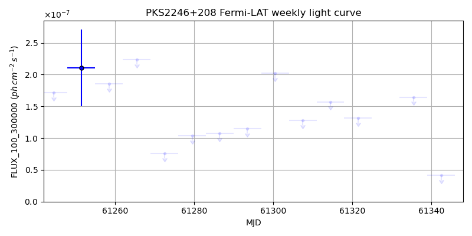
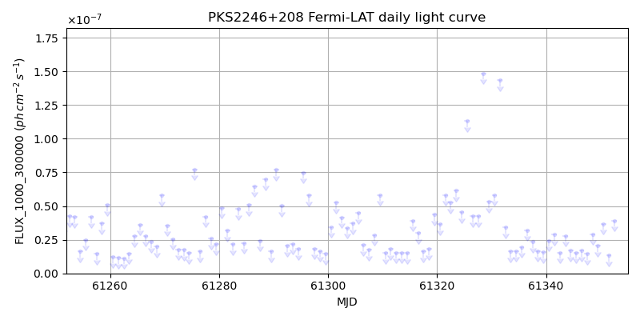
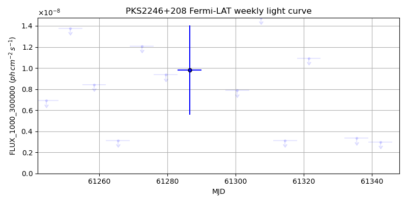

LAT Lightcurve site: https://fermi.gsfc.nasa.gov/ssc/data/access/lat/msl_lc/source/PKS_2246p208
NED: Query
Time of last update of this page: UT: 2026-11-06 16:29 (MJD: 61350.687)
| Property | Value |
|---|---|
| R.A. | 22:49:00.48 |
| Dec. | 21:07:01.2 |
| z | 1.279 |
| 3FGL SpectrumType | |
| 3FGL PL Index | -1.00 |
| 3FGL Flux_100_300000 | -1.00e+00 |
| 3FGL Flux_1000_300000 | -1.00e+00 |
| 3FGL Flux >200 GeV | -1.00e+00 |
| 3FGL Extrap. Crab >200 GeV | -1.00 |
| 3FGL Flux After EBL Absorption >200GeV | -1.00e+00 |
| 3FGL EBL Crab Fraction >200GeV | -1.00 |

| MJD | dMJD | Flux | dFlux | Frac3FGL | FracCrab>200GeV | EBLFracCrab>200GeV |
|---|---|---|---|---|---|---|
| 61345.50 | 0.50 | 9.53e-08 | 0.00e+00 | 0.00 | 0.00 | -0.00 |
| 61346.50 | 0.50 | 4.07e-07 | 0.00e+00 | 0.00 | 0.00 | -0.00 |
| 61347.50 | 0.50 | 1.29e-07 | 0.00e+00 | 0.00 | 0.00 | -0.00 |
| 61348.50 | 0.50 | 1.52e-07 | 0.00e+00 | 0.00 | 0.00 | -0.00 |
| 61349.50 | 0.50 | 5.50e-07 | 0.00e+00 | 0.00 | 0.00 | -0.00 |

| MJD | dMJD | Flux | dFlux | Frac3FGL | FracCrab>200GeV | EBLFracCrab>200GeV |
|---|---|---|---|---|---|---|
| 61314.50 | 3.50 | 1.57e-07 | 0.00e+00 | 0.00 | 0.00 | -0.00 |
| 61321.50 | 3.50 | 1.32e-07 | 0.00e+00 | 0.00 | 0.00 | -0.00 |
| 61328.50 | 3.50 | 3.35e-07 | 0.00e+00 | 0.00 | 0.00 | -0.00 |
| 61335.50 | 3.50 | 1.64e-07 | 0.00e+00 | 0.00 | 0.00 | -0.00 |
| 61342.50 | 3.50 | 4.16e-08 | 0.00e+00 | 0.00 | 0.00 | -0.00 |

| MJD | dMJD | Flux | dFlux | Frac3FGL | FracCrab>200GeV | EBLFracCrab>200GeV |
|---|---|---|---|---|---|---|
| 61345.50 | 0.50 | 1.56e-08 | 0.00e+00 | 0.00 | 0.00 | -0.00 |
| 61346.50 | 0.50 | 1.70e-08 | 0.00e+00 | 0.00 | 0.00 | -0.00 |
| 61347.50 | 0.50 | 1.46e-08 | 0.00e+00 | 0.00 | 0.00 | -0.00 |
| 61348.50 | 0.50 | 2.91e-08 | 0.00e+00 | 0.00 | 0.00 | -0.00 |
| 61349.50 | 0.50 | 2.03e-08 | 0.00e+00 | 0.00 | 0.00 | -0.00 |

| MJD | dMJD | Flux | dFlux | Frac3FGL | FracCrab>200GeV | EBLFracCrab>200GeV |
|---|---|---|---|---|---|---|
| 61314.50 | 3.50 | 3.14e-09 | 0.00e+00 | 0.00 | 0.00 | -0.00 |
| 61321.50 | 3.50 | 1.09e-08 | 0.00e+00 | 0.00 | 0.00 | -0.00 |
| 61328.50 | 3.50 | 1.70e-08 | 0.00e+00 | 0.00 | 0.00 | -0.00 |
| 61335.50 | 3.50 | 3.35e-09 | 0.00e+00 | 0.00 | 0.00 | -0.00 |
| 61342.50 | 3.50 | 2.99e-09 | 0.00e+00 | 0.00 | 0.00 | -0.00 |
--------------------------------------------------------- Using user-supplied coords: 22:49:00.48 21:07:01.2 2000 --------------------------------------------------------- FLWO UT night of: 2026-11-07 Local Sid. @ Midnight: 02:42 Sunset (-15.0) (local, UT): 18:39 01:39 Sunrise (-15.0) (local, UT): 05:36 12:36 Moonrise (local, UT): 05:16 12:16 Moonset (local, UT): Moon phase: 0.04 --------------------------------------------------------- AzTime LSID UT Obj_el Obj_az Mn_el Mn_az Sep. --------------------------------------------------------- 18:39 21:20 01:39 67.4 111.9 -35.5 278.9 147.3 19:09 21:50 02:09 73.1 124.2 -41.6 283.5 147.0 19:39 22:20 02:39 77.6 145.5 -47.5 288.8 146.8 20:09 22:50 03:09 79.6 180.3 -53.3 295.3 146.5 20:39 23:20 03:39 77.6 214.8 -58.7 303.4 146.2 21:09 23:50 04:09 73.0 236.0 -63.5 313.9 146.0 21:39 00:20 04:39 67.3 248.2 -67.5 328.0 145.7 22:09 00:50 05:09 61.2 256.2 -70.0 346.2 145.4 22:39 01:20 05:39 54.9 262.1 -70.5 6.9 145.1 23:09 01:51 06:09 48.6 266.9 -68.8 26.6 144.8 23:39 02:21 06:39 42.2 270.9 -65.4 42.5 144.6 00:09 02:51 07:09 35.8 274.6 -60.9 54.4 144.3 00:39 03:21 07:39 29.4 278.1 -55.8 63.5 144.0 01:09 03:51 08:09 23.1 281.5 -50.2 70.6 143.8 01:39 04:21 08:39 16.9 285.0 -44.4 76.4 143.5 02:09 04:51 09:09 10.8 288.5 -38.4 81.4 143.2 02:39 05:21 09:39 4.9 292.1 -32.4 85.8 143.0 03:09 05:51 10:09 -0.4 296.0 -26.3 89.9 142.8 03:39 06:21 10:39 -6.7 300.1 -20.2 93.7 142.5 04:09 06:51 11:09 -12.2 304.7 -14.2 97.5 142.3 04:39 07:21 11:39 -17.3 309.6 -8.1 101.2 142.1 05:09 07:52 12:09 -22.0 315.1 -1.2 105.0 142.0 05:36 08:19 12:36 -25.9 320.7 3.4 108.6 141.8 --------------------------------------------------------- Dark hours >55 deg.: 3.99 srcstart (UT): 2026-11-07 01:38 srcend (UT): 2026-11-07 05:38